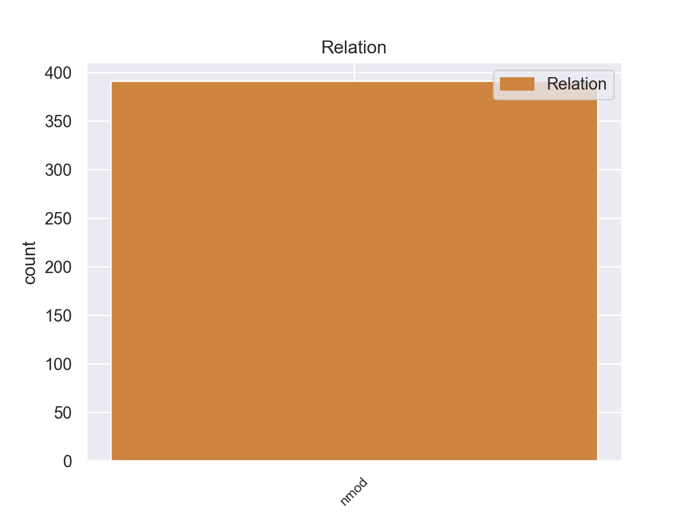
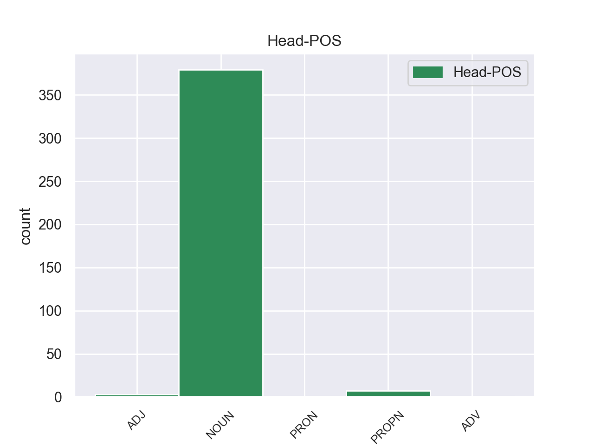
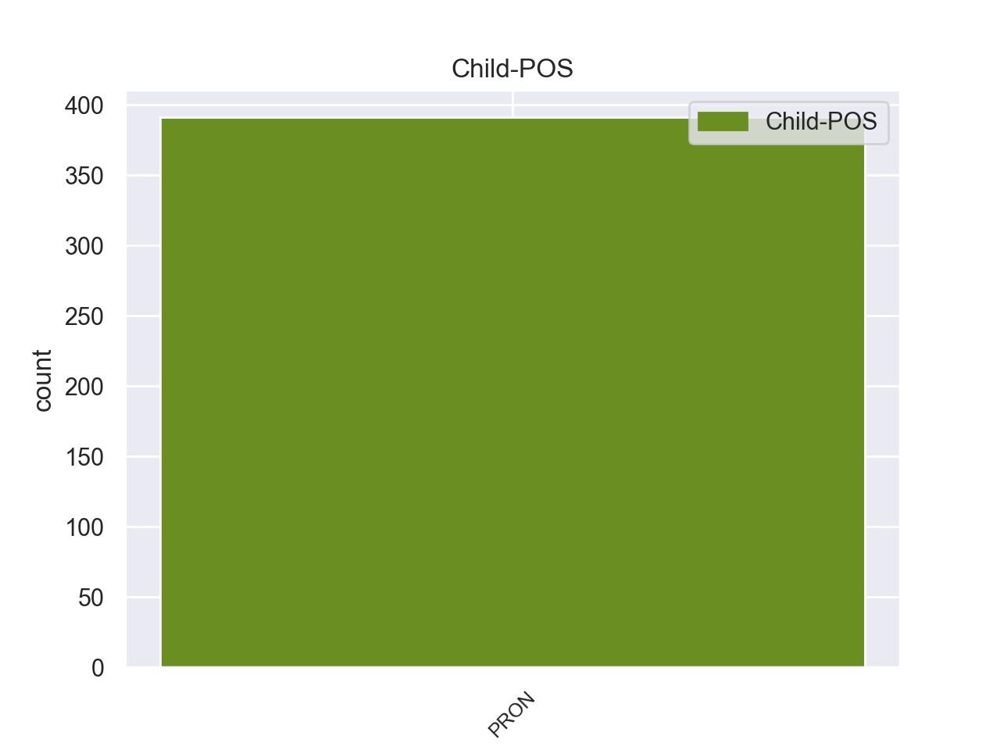

Distribution of features within this leaf



Agreement Rules sorted by frequency.
- When the dependent token is the nominal modifier(nmod) of the head token, and the dependent token is PRON.
1 Τόσο _ _ _ _ 0 _ _ _
2 το _ _ _ _ 0 _ _ _
3 ζήτημα _ _ _ _ 0 _ _ _
4 της _ _ _ _ 0 _ _ _
5 ασυλίας _ _ _ _ 0 _ _ _
6 όσο _ _ _ _ 0 _ _ _
7 και _ _ _ _ 0 _ _ _
8 η _ _ _ _ 0 _ _ _
9 αίτηση _ _ _ _ 0 _ _ _
10 για _ _ _ _ 0 _ _ _
11 άρση άρση NOUN _ Case=Acc|Gender=Fem|Number=Sing 0 _ _ _
12 της μου PRON _ Case=Gen|Gender=Fem|Number=Sing|Person=3|Poss=Yes|PronType=Prs 11 nmod _ _
13 έχουν _ _ _ _ 0 _ _ _
14 σχέση _ _ _ _ 0 _ _ _
15 μόνο _ _ _ _ 0 _ _ _
16 με _ _ _ _ 0 _ _ _
17 το _ _ _ _ 0 _ _ _
18 εάν _ _ _ _ 0 _ _ _
19 το _ _ _ _ 0 _ _ _
20 Δικαστήριο _ _ _ _ 0 _ _ _
21 μπορεί _ _ _ _ 0 _ _ _
22 να _ _ _ _ 0 _ _ _
23 εκδώσει _ _ _ _ 0 _ _ _
24 δεσμευτικά _ _ _ _ 0 _ _ _
25 βουλεύματα _ _ _ _ 0 _ _ _
26 για _ _ _ _ 0 _ _ _
27 τον _ _ _ _ 0 _ _ _
28 περιορισμό _ _ _ _ 0 _ _ _
29 της _ _ _ _ 0 _ _ _
30 ελεύθερης _ _ _ _ 0 _ _ _
31 μετακίνησης _ _ _ _ 0 _ _ _
32 των _ _ _ _ 0 _ _ _
33 βουλευτών _ _ _ _ 0 _ _ _
34 του _ _ _ _ 0 _ _ _
35 Ευρωπαϊκού _ _ _ _ 0 _ _ _
36 Κοινοβουλίου _ _ _ _ 0 _ _ _
37 ή _ _ _ _ 0 _ _ _
38 την _ _ _ _ 0 _ _ _
39 ελευθερία _ _ _ _ 0 _ _ _
40 τους _ _ _ _ 0 _ _ _
41 να _ _ _ _ 0 _ _ _
42 έρχονται _ _ _ _ 0 _ _ _
43 σε _ _ _ _ 0 _ _ _
44 επικοινωνία _ _ _ _ 0 _ _ _
45 με _ _ _ _ 0 _ _ _
46 άλλα _ _ _ _ 0 _ _ _
47 πρόσωπα _ _ _ _ 0 _ _ _
48 . _ _ _ _ 0 _ _ _
Disagree Examples:
1 Η _ _ _ _ 0 _ _ _
2 Αλυκή _ _ _ _ 0 _ _ _
3 που _ _ _ _ 0 _ _ _
4 πήρε _ _ _ _ 0 _ _ _
5 το _ _ _ _ 0 _ _ _
6 όνομά όνομα NOUN NOUN Case=Acc|Gender=Neut|Number=Sing 0 _ _ _
7 της μου PRON PRON Case=Gen|Gender=Fem|Number=Sing|Person=3|Poss=Yes|PronType=Prs 6 nmod _ _
8 από _ _ _ _ 0 _ _ _
9 την _ _ _ _ 0 _ _ _
10 παραφθορά _ _ _ _ 0 _ _ _
11 του _ _ _ _ 0 _ _ _
12 ονόματος _ _ _ _ 0 _ _ _
13 της _ _ _ _ 0 _ _ _
14 Αλίκης _ _ _ _ 0 _ _ _
15 , _ _ _ _ 0 _ _ _
16 βασίλισσας _ _ _ _ 0 _ _ _
17 της _ _ _ _ 0 _ _ _
18 χερσονήσου _ _ _ _ 0 _ _ _
19 αυτής _ _ _ _ 0 _ _ _
20 κατά _ _ _ _ 0 _ _ _
21 την _ _ _ _ 0 _ _ _
22 παράδοση _ _ _ _ 0 _ _ _
23 , _ _ _ _ 0 _ _ _
24 βρίσκεται _ _ _ _ 0 _ _ _
25 σ _ _ _ _ 0 _ _ _
26 το _ _ _ _ 0 _ _ _
27 νότιοδυτικό _ _ _ _ 0 _ _ _
28 τμήμα _ _ _ _ 0 _ _ _
29 της _ _ _ _ 0 _ _ _
30 Θάσου _ _ _ _ 0 _ _ _
31 και _ _ _ _ 0 _ _ _
32 ήκμασε _ _ _ _ 0 _ _ _
33 κατά _ _ _ _ 0 _ _ _
34 την _ _ _ _ 0 _ _ _
35 αρχαιότητα _ _ _ _ 0 _ _ _
36 κυρίως _ _ _ _ 0 _ _ _
37 λόγω _ _ _ _ 0 _ _ _
38 της _ _ _ _ 0 _ _ _
39 εξόρυξης _ _ _ _ 0 _ _ _
40 μαρμάρων _ _ _ _ 0 _ _ _
41 . _ _ _ _ 0 _ _ _
1 Ο _ _ _ _ 0 _ _ _
2 οδηγός _ _ _ _ 0 _ _ _
3 ενός _ _ _ _ 0 _ _ _
4 φορτηγού _ _ _ _ 0 _ _ _
5 , _ _ _ _ 0 _ _ _
6 ο _ _ _ _ 0 _ _ _
7 οποίος _ _ _ _ 0 _ _ _
8 είναι _ _ _ _ 0 _ _ _
9 επίσης _ _ _ _ 0 _ _ _
10 και _ _ _ _ 0 _ _ _
11 κάτοχος _ _ _ _ 0 _ _ _
12 του _ _ _ _ 0 _ _ _
13 οχήματός όχημα NOUN NOUN Case=Gen|Gender=Neut|Number=Sing 0 _ _ _
14 του μου PRON PRON Case=Gen|Gender=Masc|Number=Sing|Person=3|Poss=Yes|PronType=Prs 13 nmod _ _
15 - _ _ _ _ 0 _ _ _
16 και _ _ _ _ 0 _ _ _
17 εδώ _ _ _ _ 0 _ _ _
18 επανέρχομαι _ _ _ _ 0 _ _ _
19 σ _ _ _ _ 0 _ _ _
20 την _ _ _ _ 0 _ _ _
21 πρώτη _ _ _ _ 0 _ _ _
22 έκθεση _ _ _ _ 0 _ _ _
23 - _ _ _ _ 0 _ _ _
24 κινείται _ _ _ _ 0 _ _ _
25 πάντοτε _ _ _ _ 0 _ _ _
26 σ _ _ _ _ 0 _ _ _
27 τα _ _ _ _ 0 _ _ _
28 όρια _ _ _ _ 0 _ _ _
29 της _ _ _ _ 0 _ _ _
30 νομιμότητας _ _ _ _ 0 _ _ _
31 , _ _ _ _ 0 _ _ _
32 εάν _ _ _ _ 0 _ _ _
33 θέλει _ _ _ _ 0 _ _ _
34 να _ _ _ _ 0 _ _ _
35 εργάζεται _ _ _ _ 0 _ _ _
36 επικερδώς _ _ _ _ 0 _ _ _
37 . _ _ _ _ 0 _ _ _
1 Η _ _ _ _ 0 _ _ _
2 Βόρεια _ _ _ _ 0 _ _ _
3 Κορέα _ _ _ _ 0 _ _ _
4 πραγματοποίησε _ _ _ _ 0 _ _ _
5 παρεμφερείς _ _ _ _ 0 _ _ _
6 ασκήσεις _ _ _ _ 0 _ _ _
7 τον _ _ _ _ 0 _ _ _
8 περασμένο _ _ _ _ 0 _ _ _
9 μήνα _ _ _ _ 0 _ _ _
10 , _ _ _ _ 0 _ _ _
11 και _ _ _ _ 0 _ _ _
12 κάποια _ _ _ _ 0 _ _ _
13 από _ _ _ _ 0 _ _ _
14 τα _ _ _ _ 0 _ _ _
15 πυρά πυρ NOUN NOUN Case=Acc|Gender=Neut|Number=Plur 0 _ _ _
16 της μου PRON PRON Case=Gen|Gender=Fem|Number=Sing|Person=3|Poss=Yes|PronType=Prs 15 nmod _ _
17 έφθασαν _ _ _ _ 0 _ _ _
18 σ _ _ _ _ 0 _ _ _
19 τα _ _ _ _ 0 _ _ _
20 ύδατα _ _ _ _ 0 _ _ _
21 της _ _ _ _ 0 _ _ _
22 Ν. _ _ _ _ 0 _ _ _
23 Κορέας _ _ _ _ 0 _ _ _
24 , _ _ _ _ 0 _ _ _
25 προκαλώντας _ _ _ _ 0 _ _ _
26 απάντηση _ _ _ _ 0 _ _ _
27 από _ _ _ _ 0 _ _ _
28 πλευράς _ _ _ _ 0 _ _ _
29 Ν. _ _ _ _ 0 _ _ _
30 Κορέας _ _ _ _ 0 _ _ _
31 . _ _ _ _ 0 _ _ _
1 Η _ _ _ _ 0 _ _ _
2 Χίλαρι _ _ _ _ 0 _ _ _
3 Κλίντον _ _ _ _ 0 _ _ _
4 είναι _ _ _ _ 0 _ _ _
5 άρρωστη _ _ _ _ 0 _ _ _
6 εδώ _ _ _ _ 0 _ _ _
7 και _ _ _ _ 0 _ _ _
8 εβδομάδες _ _ _ _ 0 _ _ _
9 με _ _ _ _ 0 _ _ _
10 αποτέλεσμα _ _ _ _ 0 _ _ _
11 να _ _ _ _ 0 _ _ _
12 αναγκαστεί _ _ _ _ 0 _ _ _
13 να _ _ _ _ 0 _ _ _
14 ακυρώσει _ _ _ _ 0 _ _ _
15 δημόσιες _ _ _ _ 0 _ _ _
16 εμφανίσεις _ _ _ _ 0 _ _ _
17 και _ _ _ _ 0 _ _ _
18 προγραμματισμένα _ _ _ _ 0 _ _ _
19 ταξίδια ταξίδι NOUN NOUN Case=Acc|Gender=Neut|Number=Plur 0 _ _ _
20 της μου PRON PRON Case=Gen|Gender=Fem|Number=Sing|Person=3|Poss=Yes|PronType=Prs 19 nmod _ SpaceAfter=No
21 . _ _ _ _ 0 _ _ _
1 Το _ _ _ _ 0 _ _ _
2 Υπουργείο _ _ _ _ 0 _ _ _
3 Εξωτερικών _ _ _ _ 0 _ _ _
4 της _ _ _ _ 0 _ _ _
5 Ρωσίας _ _ _ _ 0 _ _ _
6 δήλωσε _ _ _ _ 0 _ _ _
7 ότι _ _ _ _ 0 _ _ _
8 οι _ _ _ _ 0 _ _ _
9 κυρώσεις _ _ _ _ 0 _ _ _
10 της _ _ _ _ 0 _ _ _
11 ΕΕ _ _ _ _ 0 _ _ _
12 αποτελούν _ _ _ _ 0 _ _ _
13 " _ _ _ _ 0 _ _ _
14 άμεση _ _ _ _ 0 _ _ _
15 πρόσκληση _ _ _ _ 0 _ _ _
16 προς _ _ _ _ 0 _ _ _
17 τους _ _ _ _ 0 _ _ _
18 ντόπιους _ _ _ _ 0 _ _ _
19 Νεοναζί _ _ _ _ 0 _ _ _
20 " _ _ _ _ 0 _ _ _
21 να _ _ _ _ 0 _ _ _
22 συνεχίσουν _ _ _ _ 0 _ _ _
23 τις _ _ _ _ 0 _ _ _
24 παράνομες _ _ _ _ 0 _ _ _
25 ενέργειές ενέργεια NOUN NOUN Case=Acc|Gender=Fem|Number=Plur 0 _ _ _
26 τους μου PRON PRON Case=Gen|Gender=Masc|Number=Plur|Person=3|Poss=Yes|PronType=Prs 25 nmod _ _
27 σ _ _ _ _ 0 _ _ _
28 τη _ _ _ _ 0 _ _ _
29 νοτιοανατολική _ _ _ _ 0 _ _ _
30 Ουκρανία _ _ _ _ 0 _ _ _
31 . _ _ _ _ 0 _ _ _